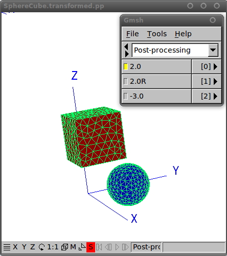
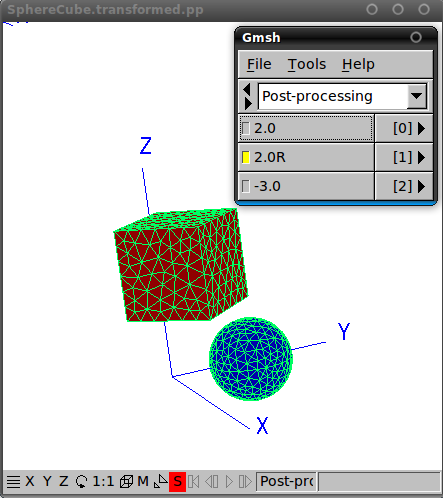
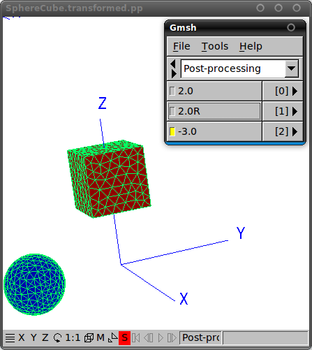

Geometrical transformations in scuff-em
For some of the physical problems handled by codes in the scuff-em suite, it is of interest to consider the effect of geometrical transformations---namely, rigid displacements and rotations of the objects in a geometry with respect to one another.
For example, if you are investigating the Casimir force between two nanoparticles of some exotic shape, you will probably want to carry out the calculation for many (let's say 25) different values of the interparticle separation and obtain the full force-vs-separation curve, not just the force on a single configuration.
Of course, one way to handle this situation would be simply to
create 25 different .scuffgeo files, each describing
the nanoparticles at different separation distances, and then run
scuff-cas3d
25 separate times. However, such a procedure would not only be a major
hassle, but would also fail to exploit some significant
computational redundancies.
For example, in a geometry consisting of two nanoparticles, the diagonal blocks of the BEM matrix are independent of the interparticle separation and hence need only be assembled once per frequency, after which they can be reused for all 25 interparticle separations. This can save a lot of time as compared to the cost of running 25 independent calculations.
To facilitate this type of calculation, several of the
standalone applications in the
scuff-em
suite offer the option of specifying a transformation list.
This is a file describing a sequence of geometrical transformations
to be carried out on the base geometry described by your
.scuffgeo file. Each output quantity that you
request (be it the y-directed Casimir force, the
total heat transfer, or what have you) will then be computed
and reported separately for each of the transformations you
specified.
An important caveat is that geometrical transformations may not change the nesting topology of a scuff-em geometry. This is discussed in more detail below.
- Syntax of the
.transfile - An example of a
.transfile - Visualizing the effect of the transformations you specified
- Transformations may not change the nesting topology
1. Syntax of the
.transfileYou will list your geometrical transformations in a file whose name conventionally has file extension
.trans. This is the file you will specify using the--transfileoption to scuff-cas3d and other codes.The
.transfile may contain any number of transformations. Each transformation will specify which objects in your geometry are to be transformed, and how those objects will be displaced or rotated.Each transformation will be specified by a section of the file that looks something like this:
TRANSFORMATIONname-of-transformation
OBJECTFirstObjectLabel
displacement-or-rotation
displacement-or-rotation
...
OBJECTSecondObjectLabel
displacement-or-rotation
displacement-or-rotation
...
ENDTRANSFORMATIONThe name-of-transformation field after the
TRANSFORMATIONkeyword specifies a mandatory label assigned to this transformation, which will be used in output files to identify quantities computed under this transformation.The FirstObjectLabel field should be the label of an object in your geometry (as assigned using the
OBJECTkeyword in a.scuffgeofile. Displacements and rotations specified after this line will apply to the object named on this line, until the nextOBJECTline is encountered.Each displacement-or-rotation line should look either like this:
DISPLACEDxx yy zzor like this:
ROTATEDddABOUTnx ny nzThe former case specifies that the object in question is to be displaced through a displacement vector with cartesian coordinates (xx,yy,zz).
The latter case specifies that the object in question is to be rotated through dd degrees about an axis passing through the origin and through the point with cartesian coordinates (xx,yy,zz). Note that
ABOUTis a fixed keyword that must be repeated verbatim. (Note that the rotation angle is specified in degrees, not radians.)You may specify any number of
DISPLACEMENTandROTATIONstatements to be applied to each object. These statements will be applied in the order they are specified in the.transfile.Note that
TRANSFORMATION...ENDTRANSFORMATIONsections are not cumulative; two consecutive such sections do not build on each other, but instead describe distinct transformations applied to the geometry starting in its original state as described in the.scuffgeofile.(However, if your
.scuffgeoincluded anyDISPLACEDorROTATEDstatements to transform object meshes prior to their inclusion in the geometry, then the transformations in a.transfile are cumulative with respect to those, as any such transformations are considered to be included into the base default configuration of the geometry.)Blank lines and comments (lines beginning with
#) in.transfiles are ignored.Abbreviated Syntax
For simple transformations you may use the following abbreviated one-line syntax in place of an entire
TRANSFORMATION...ENDTRANSFORMATIONsection:TRANSnameOBJECTLabel displacement-or-rotationThis differs from the syntax outlined above in the following ways:
- The entire transformation is specified on a single line.
- The line begins with the shortened keyword
TRANS, and there is no terminating keyword.
Empty Transformations
The following transformations are perfectly legal:
TRANSFORMATION Nothing ENDTRANSFORMATIONTRANS DefaultThese define
transformationsthat actually leave the geometry untouched from the configuration specified in the.scuffgeofile. You may name these transformations anything you please, just as with any other transformations. This is sometimes useful for carrying out computations on a sequence of geometric configurations of which one is the unmodified configuration of the.scuffgeofile.2. An example of a
.transfileHere's an example of a
.transfile designed to be used with this geometry file, which contains two objects with user-assigned labelsTheSphereandTheCube.Note that, in the
.scuffgeofile, the cube is displaced 3 units in the positive z direction relative to the configuration of its mesh file; as noted above, transformations in the.transare carried out starting from that displaced configuration.This file declares three separate transformations:
-
The first (labeled
2.0) displaces the sphere 2.0 length units in the y direction, while simultaneously displacing the cube 2.0 units in the x direction. -
The second (labeled
2.0R) is the same as the first, but with the cube first rotated 45 degrees (π/4 radians) about the z axis before it is displaced. -
The third (labeled
-3.0) displaces the sphere negative 3.0 length units in the y direction, while leaving the cube untouched.
# a transformation in which both cube and sphere are displaced TRANSFORMATION 2.0 OBJECT TheSphere DISPLACED 0.0 2.0 0.0 OBJECT TheCube DISPLACED 2.0 0.0 0.0 ENDTRANSFORMATION # similar to the above, but now the square is rotated before it is displaced TRANSFORMATION 2.0R OBJECT TheSphere DISPLACED 0.0 2.0 0.0 OBJECT TheCube ROTATED 45 ABOUT 0 0 1 DISPLACED 2.0 0.0 0.0 ENDTRANSFORMATION # in this transformation, only the sphere is affected, so we can use the abbreviated syntax TRANS -3.0 OBJECT TheSphere DISP 0.0 -3.0 0.03. Visualizing the effect of the transformations you specified
Before running a full calculation using a
.transfile, you will generally want to double-check to make sure that the geometrical transformations as interpreted by scuff-em are actually what you intended.A simple way to do this is to use the scuff-analyze utility application that comes with the scuff-em distribution. Invoking this utility with the
--geometryand--transfileoptions to specify your.scuffgeoand.transfiles will produce an output file calledMyGeometry.transformed.pp(whereMyGeometry.scuffgeowas the name of the your geometry file) which you can open in gmsh.For example, to visualize the impact of the transformations in the example above, we could proceed as follows. (All the files needed to execute this example may be found in the
examples/SphereCubedirectory of the scuff-em source distribution.)% scuff-analyze --geometry SphereCube.scuffgeo --transfile SphereCube.transThis will generate a file named
SphereCube.transformed.ppthat you can open in gmsh:% gmsh SphereCube.transformed.pp


Note that the items in the gmsh menu here are labeled using the strings you assigned to each transformation in your
.transfile (the name-of-transformation field in the syntax description above).4. Geometrical transformations may not change the nesting topology
An important restriction on the use of geometrical transformations in scuff-em is that transformations may not change the nesting topology of a scuff-em geometry -- that is, the containership relations that classify which objects are embedded inside which other objects. This is because scuff-em autodetects the nesting topology when it first reads in the
.scuffgeofile and cannot subsequently redefine it.For example, perhaps your
.scuffgeofile describes a geometry consisting of a big sphere (perhaps filled with a dielectric liquid like water) and a smaller sphere (perhaps a ball of silicon) inside this sphere. In this case, you can use geometrical transformations to move the smaller sphere around within the larger sphere, but you may not write a geometrical transformation that displaces the smaller sphere all the way outside the larger sphere. If you want to run simulations in which the smaller sphere lies outside the larger sphere, you will need to write a new.scuffgeofile in which that condition is satisfied from the start.(Also, you may not write a geometrical transformation that displaces the smaller sphere in such a way that its surface intersects the surface of the larger sphere -- in that case, your geometry would contain a multi-material junction and would require a
.scuffgeodescription in terms ofREGIONSandSURFACESinstead of the simpler description in terms ofOBJECTSthat suffices for fully-embedded geometries.)As another example, suppose you want to compute the Casimir force between two identical dielectric objects over a range of separations. In this case, you might be tempted to write a
.scuffgeofile in which the two objects start out lying on top of each other, and then displace them using geometrical transformations in the actual force computation. However, this won't work: when scuff-em first processes the.scuffgeofile, it will be confused by the appearance of two objects appearing to coexist in the same physical space, and the nesting topology will be incorrectly characterized. Instead, you will want to start out with a.scuffgeofile in which the objects are displaced from one another; you can, of course, subsequently rotate or displace them further to your heart's content using geometrical transformations.
Geometrical Transformations in scuff-em